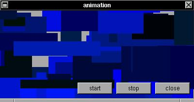

You can create very interactive applications with XSTEP. If you set the 'animate' variable to a non-zero value, animations can be created (in fact XSTEP will continuouslly generate broadcast events). You can control the speed of this animation with the function gettimeofday(), how in xstepgears application.EXAMPLE
In this example, the broadcast function of any widget (in this case a XSTEP window) can be redirected to other function (in this case draw()). The global variable 'animate' can enable or disable the continuous execution of draw().#include <xstep.h> void draw(struct xtree *t) { if(!animate) return; XSetForeground(display,t->gc,rand()%256); XFillRectangle(display,t->win,t->gc, t->aw/2+rand()%t->aw-rand()%t->aw, t->ah/2+rand()%t->ah-rand()%t->ah, rand()%t->aw/4,rand()%t->ah/4); } void startf(struct xtree *t) { animate=1; } void stopf (struct xtree *t) { animate=0; } void xmain(int n,char *p[]) { struct xtree *win; win=window_create(0,0,400,180,"animation"); win->broadcast=draw; button_create(-(2*80+8),-8,72,24,"start", startf); button_create(-(1*80+8),-8,72,24,"stop", stopf); button_create(-(0*80+8),-8,72,24,"close", window_close); }